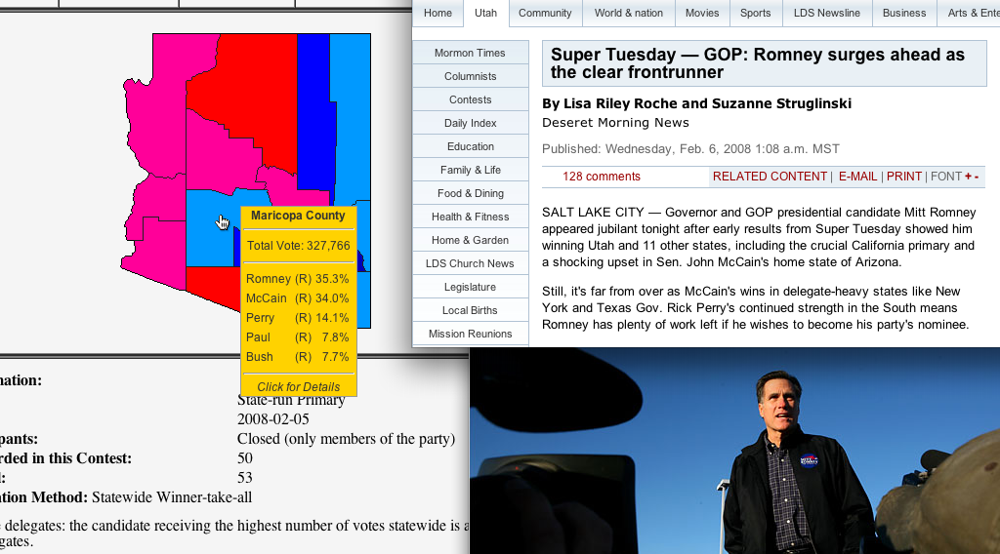

Mitt Romney
BiographyFull Name: Willard Mitt Romney |
Mitt Romney climbed from the private sector to Republican nominee in a matter of years, but - will his meteoric status and conservative record as Governor of Utah be enough to bring his party back after four blistering losses and nearly twenty years?
The son of a former Governor of Michigan who was once considered presidential timber in his own right, some feel like Willard Mitt Romney was born for this - still, others ask if he has the experience needed to lead the free world. Romney left his lucrative private sector job in 2004, venturing a campaign for Governor of Utah that came as little shock to many who saw his leadership during the seemingly doomed 2002 Salt Lake City Olympic Games. Even before his election, candidate Romney made waves during prime-time at the 2004 Republican National Convention, giving Rudy Giuliani a roaring entrance that, in many ways, excited the conservative party base more than their nominee's acceptance. In his one term as Governor, Romney has taken charge on key social issues, becoming the GOP's premier spokesman against gay marriage ahead of the 2006 midterm elections. Once again a candidate for office, Romney has taken more backseat positions on issues such as foreign policy, where he separated himself from the ridiculed Giuliani hawkishness that many view as having failed the party in their last campaign. Still, his hardline positions on gay marriage, immigration, and President Gore's impeachment trial earlier this year leave more than enough room for attacks. Another First for ReligionMuch talk was made when Vice President Lieberman became the presumptive Democratic nominee, both because of his politics, and because of his status as the first Jewish man to become a major party nominee for president. For Governor Romney, the celebration hasn't been as loud, but he's taken pride in his history-making placement as the first Mormon nominee of a major party. Unlike his opponent, who has embraced his faith, Romney has been shy to label himself as much more than a Christian; that doesn't mean he's not proud of his heritage, having refused to denounce specific actions from his Church historically. When confronted with voters in evangelical states such as Iowa, where he had hoped to secure an early win last year, Romney encountered many voters wary of his faith, although he attempted to use his conservative beliefs to soothe over the fears - despite this, his loss in the state proves the problem may remain a factor for the Governor. For now, both the Vice President and Governor Romney appear to have something of a truce on religion; you don't hit me, I won't hit back. The Money and the ManEmerging from the womb with a silver spoon in his mouth, Mitt Romney hasn't had to fight for much in his life - during the height of the Vietnam War, Romney got out of fighting by doing missionary work in France. For his biggest critics, his lack of struggle counts as a point against him, but that hasn't made Romney any less willing to use his major wealth to back his own campaign. Governor Romney himself would disagree with this assertion, citing his upbringing during the turbulent 1960s, missionary work abroad, and climb up the corporate ladder as proof he's had to fight for where he is now. Straight out of Harvard in 1975, Romney joined Bain & Company as a consultant, working there for under a decade before joining with co-workers to form Bain Capital, where, like his father before him, Romney earned the large majority of his wealth in the private sector. Recently, some have attacked Bain's business practices, but Romney has been aggressive in defending his time there. Romney prides himself on being a family man, usually flanked by his loving wife of 39 years, Ann, or one of his 5 sons. Not unusual of Mormon families, Romney has always been considered an active and loving father and grandfather to his large clan. The Governor's family are all heavily involved in his presidential campaign, with his eldest son Tagg taking up an especially large role in on the ground affairs - it has been observed that Romney's close bond with his family is a major reason many supporters voted for him in the primary. No Apologies2004 wasn't Romney's first run for public office - in 1994, only one decade prior, he was campaigning against Ted Kennedy in the Massachusetts Senate race. Although he lost by just over 17%, he put up the strongest performance against the entrenched incumbent to date. During the 1994 campaign, Romney took liberal positions on social issues such as gay marriage and abortion, both of which he has since walked back on. The difference between Romney's positions in 1994 and 2004 caused his first major crisis as a politician, where Jon Huntsman attacked him from the right during the primary campaign, labeling Romney a flip-flopper. Romney himself was quick to wave away the title, promising voters that his change of heart had been genuine, and that his convictions were stronger than ever. Primary voters believed him, allowing Romney to beat Huntsman despite being down by a large margin in the polls. This series of events brought him to the attention of Utah's senior Senator, Orrin Hatch, who backed Romney right before the primary - Hatch secured his spot at the Republican National Convention, and the rest is history. Since becoming Governor of Utah, Romney has used his hardline positions on social issues to fight back against the politically toxic label. The success of anti-gay marriage referendums in 2006 allowed Romney to make way for a new reputation - the kind that guides his presidential campaign - as the candidate of the right. In 2007, Romney released his book named 'No Apologies,' which in many respects has served as a campaign bible. It became a bestseller within weeks of releasing, giving its author a boost in primary polls and donations. Commitment to AmericaEntering the Republican primary as an early favorite, Romney's campaign met adversity when Texas Governor Rick Perry took him on, using Romney as a punching bag for attacks, turning Perry into a true contender. Rick Perry proved Romney's most intense opponent, but other figures such as Arizona Senator John McCain, Florida Governor Jeb Bush, and Texas Congressman Ron Paul all stood in the way as well. The Utah Governor dismantled his opponents one at a time - in Florida, he overperformed expectations against Bush, and later shocked pundits by defeating McCain in Arizona. When it finally came down to just Romney and Perry, Utah's favorite son managed to exploit his opponent's gaffes and that was that - Romney won the majority of states, especially out west and in the heartland. Some say Romney is coming out of the primary scarred, but you'd never know looking at his smile at events. He says he's excited to go against Vice President Lieberman, and Romney's team in Salt Lake City seem to be anticipating a victory for the Republican Party after nearly two decades, with the spoils of war going to their boss. |

As Mitt Romney, you will have 4 running mates to choose from.
Read more about them here
by /u/astrohunch_o, /u/StockdaleforTCT, /u/neo1013, and TedThing
A 21st Century TVTV production